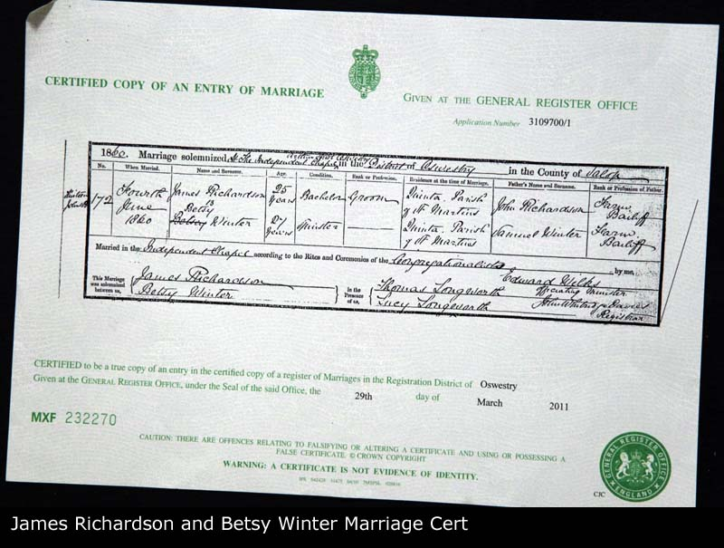

Samuel TO BE CONFIRMED RICHARDSON b. 1770
Samuel TO BE CONFIRMED RICHARDSON b. 1770 - Overview
- Overview
- Chronology
- Family As A Child
- Family As A Spouse
- Pedigree
- Descendants Chart
- Gallery
| Name | Full Name | Samuel TO BE CONFIRMED RICHARDSON |
| Forename | Samuel TO BE CONFIRMED | |
| Surname | RICHARDSON | |
| Sex | Male | |
| Birth | 1770 | |
| Spouse | Esther TO BE CONFIRMED CLARKE b. 1766 [Family] | |
| Children | 1. Robert RICHARDSON b. 1794 d. 1794 2. John RICHARDSON b. 1797 d. 1881 3. James RICHARDSON b. 1802 d. 1802 | |
| Change Date | Date | 27/04/2011 |
| Time | 00:17 | |
Samuel TO BE CONFIRMED RICHARDSON was born in 1770. This names comes from the research of from Mark Hurley and Richard Ford's Family Trees. No records about this person found. 3 sons listed. |
Children
| i | Robert RICHARDSON1 was born in 1794. He died in 1794 as an infant. | |||
| ii | John RICHARDSON2 was born in 1797 in Butley, Suffolk, England. He died in 1881 in Butley, Suffolk, England aged about 84. He was buried on 07/10/1881 in Butley, Suffolk, England. John was baptized on 07/02/1797 in Butley, Suffolk, England. He resided on 06/06/1841 in Butley, Suffolk, England. He was a Agricultural Labourer on 06/06/1841 in Butley, Suffolk, England. On 30/03/1851 John resided in Butley, Suffolk, England. On 30/03/1851 he was a Agricultural Labourer. On 04/06/1860 he was a Farm Bailiff. John resided on 07/04/1861 in Butley, Suffolk, England. On 07/04/1861 he was a Agricultural Labourer. On 02/04/1871 he resided in Butley, Suffolk, England. On 02/04/1871 he was a Agricultural Labourer in Butley, Suffolk, England. |  | ||
| iii | James RICHARDSON3 was born in 1802. James died in 1802 as an infant. |  |
Notes
1. This names comes from the research of from Mark Hurley and Richard Ford's Family Trees No records about this person found; [Note Record]
2. John Richardson is born in Butley where he lives out his days as an agricultural labourer. Although James marriage cert lists him as a farm bailiff. Perhaps this is an exaggeration driven by his new wife's father's similar status, as John lists himself as a labourer through all census records before and after their marriage.; [Note Record]
3. This names comes from the research of from Mark Hurley and Richard Ford's Family Trees No records about this person found; [Note Record]
Web page generated using a registered copy of GedScape software, licensed by Mark Watkin